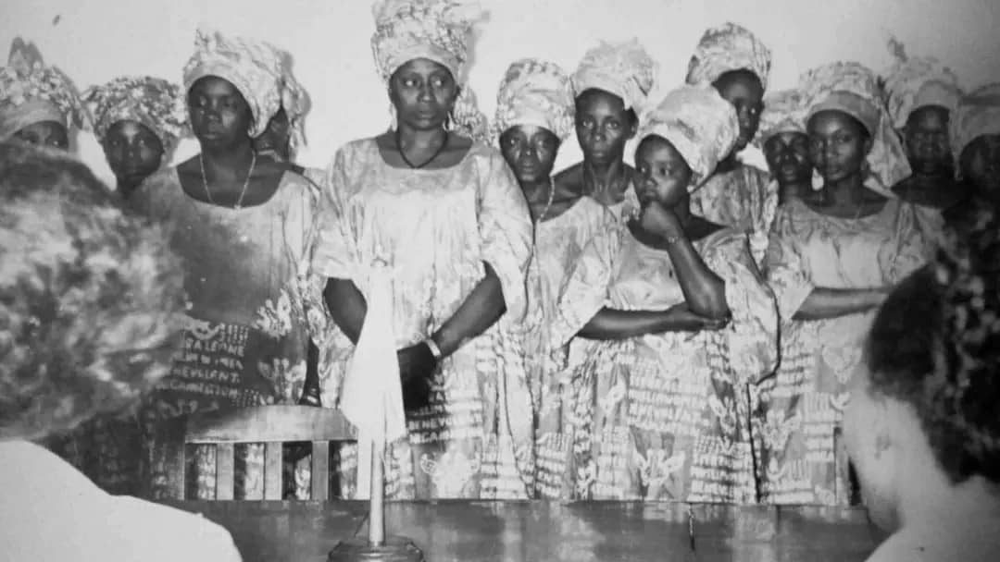
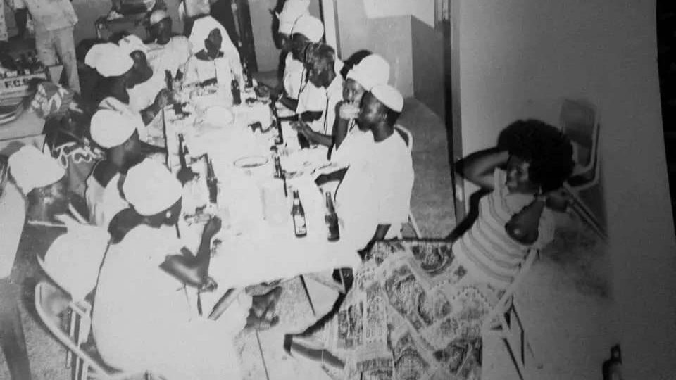
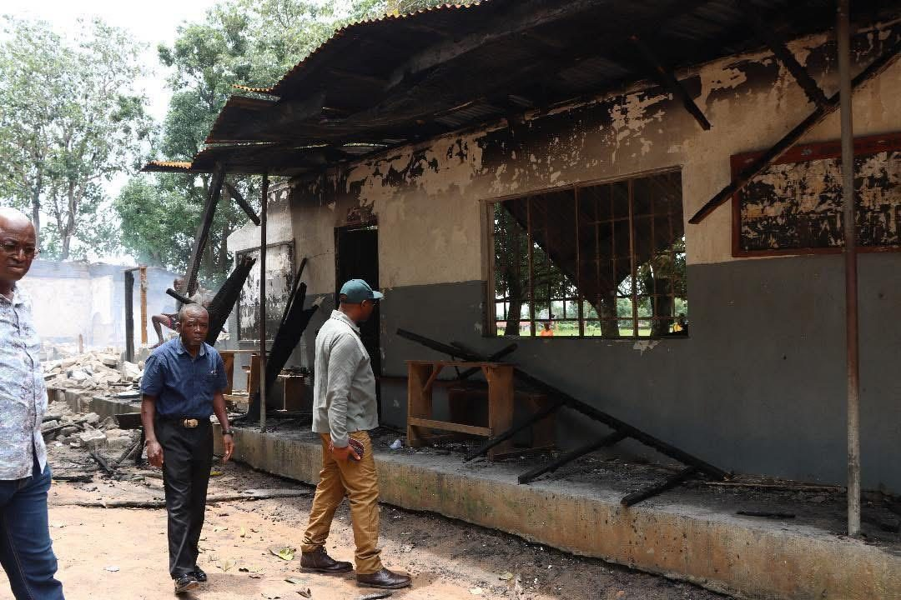

Our History
Benevolent Islamic Secondary School, Makeni, was founded in 1979 by the Sierra Leone Muslim Women's Benevolent Organisation (SLMWBO). The organisation was formed to serve the poor and needy, and a school offering accessible, quality education became one of the most lasting ways it did so.


Our Founders
From the start the school belonged to the women who built it. Their names live on in the role of the proprietresses, and in the third verse of the school song:
Those whose thoughts to build a school
Women with foresight and truth
Now sheds its prowess overall
Let's sing hurray! Hurray!
Their purpose is still the school's purpose today: education for every young person, whatever their economic or social background, with Islamic values and good character at its heart. Read our mission, vision and values.
May 1991: A Song of Our Own
For its first twelve years the school had no official song. In May 1991, six Lower Sixth Form students, led by the Head Boy, B.I.B. Kargbo, set out to change that. With help from Mr Moi Foray and Mr Wyse of Makeni Teachers College, they brought the school the anthem it still sings today. Read the full story of the school song.
Fire and Rebuilding

The school has known hard days too. Fire destroyed one of our classroom blocks, and members of the school community came together to see the damage and begin the work of rebuilding.
Today
More than four decades on, Benevolent Islamic Secondary School serves pupils across its Junior and Senior Secondary Schools in Ropolon, Makeni, carrying forward the work its founders began.